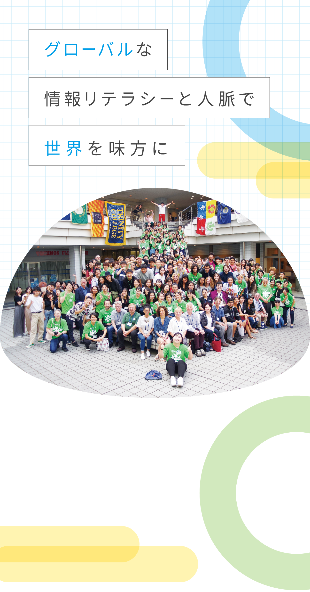
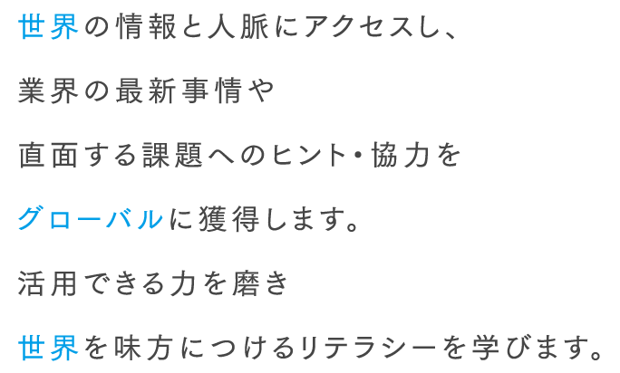
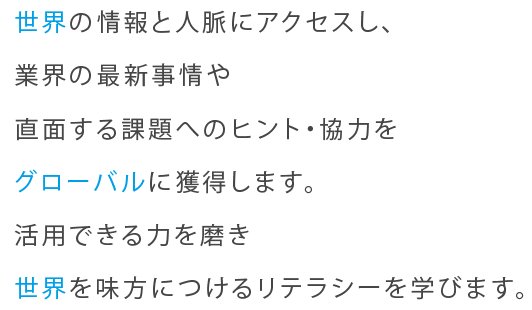
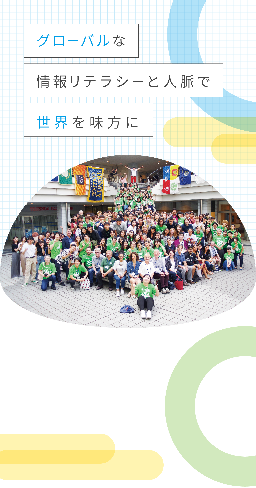
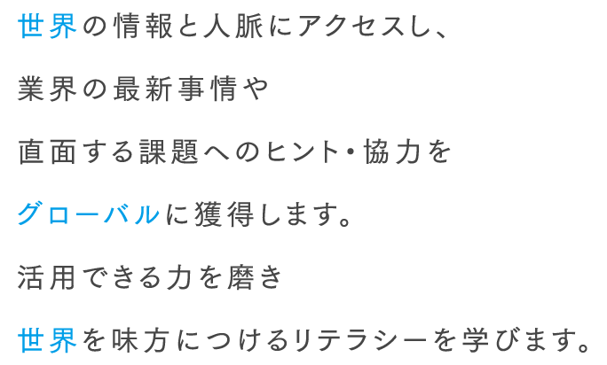
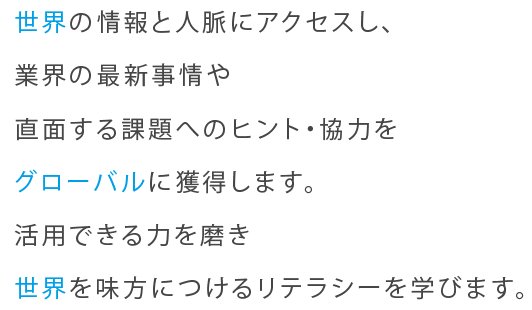
4つの
ラーニングPOINT
ラーニングPOINT01
さまざまな科目・授業を通して「世界には欲しい情報が溢れている」という認識と関心を醸成します。グローバルな情報をリサーチしたりふれたりして、各学科の専門分野における日本と海外の違いなど、多くの気づきと刺激を得られる機会を設けています。
ラーニングPOINT02
情報リサーチに際して必要な語学力や異文化理解およびコミュニケーション力を磨くための語学＆検定カリキュラムや海外姉妹提携大学群および学内の同世代のネイティブとの多彩な交流プログラムが活用できます。
ラーニングPOINT03
グローバルに収集した情報を活用して、TECHNOS ゼミなどで専門分野の実践課題に挑戦します。交流したネイティブとSDGs への取り組みを話し合い、協同することで、社会に出て直面する課題解決にグローバルな情報リテラシーや人脈を活用します。
ラーニングPOINT04
海外姉妹提携大学とのオリジナル海外研修プログラムや「好きな国」×「好きな期間」×「好きな目的」で海外留学するサンドイッチ留学制度、海外経験と職業体験とを同時にできる海外インターンシップなどグローバル体験の機会も多様に選択できます。
インターナショナルウイーク
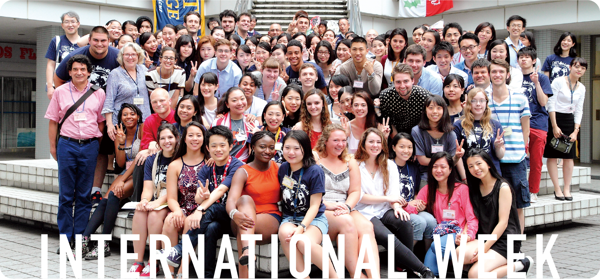世界の同時代の学生たちと
交流する2週間。
テクノスカレッジ最大の国際交流イベント、テクノス・インターナショナルウイークは毎年６月に開催されます。オックスフォード大学・ペンブロークカレッジ(イギリス)をはじめ、アメリカ８校、ニュージーランド１校、台湾１校の名門11大学の教授や選抜された優秀な学生たちが本校に２週間滞在。相互の体験授業や学生が企画する各種イベントを通じて交流を深めます。言葉も文化も異なる人々と交流する中でお互いを理解し、多様性の中で生きるチカラを養います。
国際力を高める
2週間のプログラム
【過去のスケジュール例】
- DAY1ウェルカムセレモニー＆パーティ
- DAY2富士山・河口湖見学 →
「みどりの村」へ移動 - DAY3「みどりの村」
レクリエーション・BBQ - DAY4松本城見学→東京へ
- DAY5歌舞伎レクチャー →歌舞伎鑑賞
- DAY6オフ オプショナルツアー
(プロ野球観戦など) - DAY7体験入学参加 高校生との交流
- DAY8鎌倉観光(長谷寺・高徳院・鶴岡八幡宮)
- DAY9オンキャンパスプログラム
(書道・和菓子・おもちゃ) - DAY10オフキャンパスプログラム
(浅草見学・かっぱ橋食品サンプル作り体験) - DAY11オンキャンパスプログラム
(保育・コンサート・イベント) - DAY12オンキャンパスプログラム
(エアライン・ブライダル・アフレコ)
フェアウェルパーティー
-
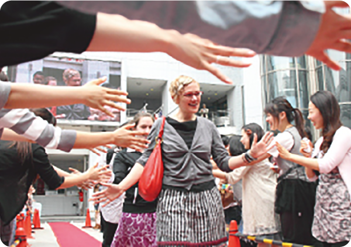
ウェルカムセレモニーでは、学生全員でお出迎え。テクノビジョンには大きく留学生の名前と写真、そしてレッドカーペットを敷いての華やかな歓迎式です。
-
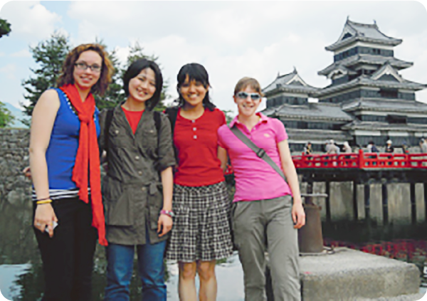
本校所有の総合研修施設「みどりの村」の研修旅行では、松本城に立ち寄り、お城をバックに記念写真。留学生にとっては日本で見るもの、聞くものすべてが新鮮です。
-
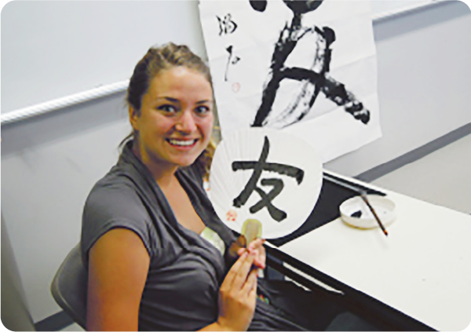
留学生に大人気の書道クラス。書道初体験の作品をかかげて誇らしげに、はい、ポーズ!
-
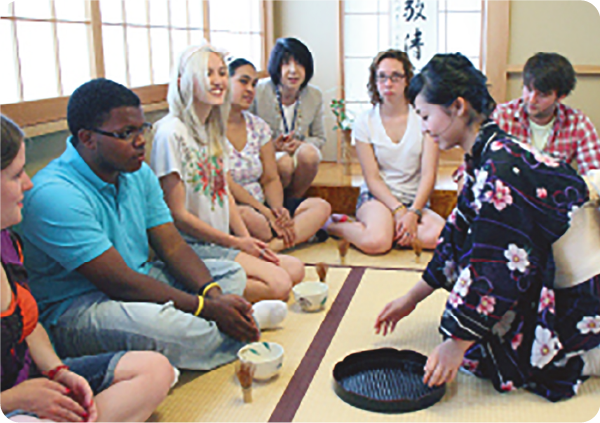
オンキャンパスプログラムで人気ナンバー1の茶道クラス。着物をきちんと着付けて、日本のおもてなしの心を味わっていただきます。
-
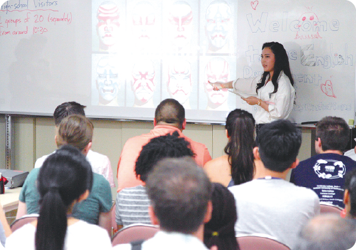
歌舞伎鑑賞の前には、しっかりと歌舞伎のお勉強。英語キャリア科の学生による英語での説明に興味津々!!
-
テクノス・インターナショナルウィークでさまざまなイベント、プログラムを通じて育まれた友情。やはり最後は涙、涙のお別れです。
ホープ大学でのアスレティック研修
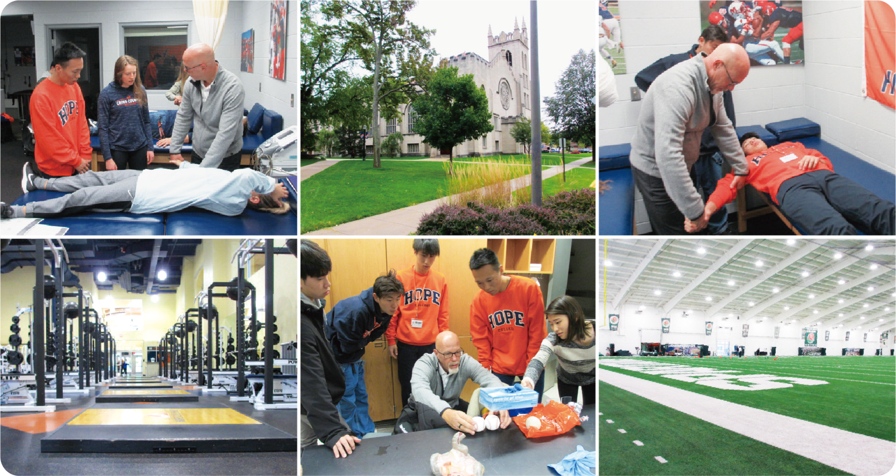スポーツ大国アメリカの
トレーナー育成現場に飛び込む。
テクノスカレッジの海外姉妹校であるアメリカ・ミシガン州にあるホープ大学。約２週間におよんだ留学期間中では、語学やトレーナーについての講義はもちろん、現地学生との濃密な時間を過ごし、帰国後は渡米前に設けられた課題について発表しました。(2019年に実施しています)
Technos Art Program
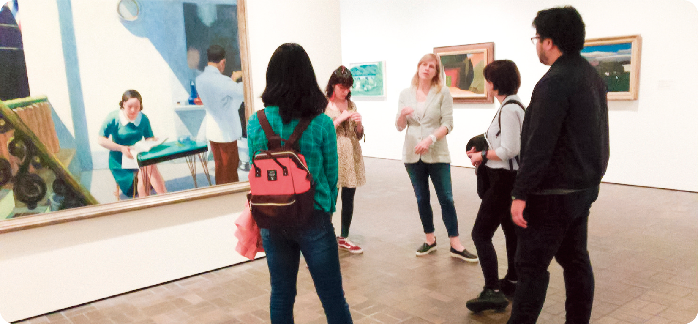 NYと東京を結び
芸術にふれながら交流を深める。
姉妹校の一つであるニューヨーク州立大学バーチェス校との交流プログラム。エンターテイメントやアートの本場であるNYを肌で感じながらクリエイティブの感性を高めることを目的としています。また、バーチェス校の学生や教授がTECHNOS祭に合わせて来日するなど、相互の人的交流を深めます。(2019年に実施しています)
Technos Assistant の常駐
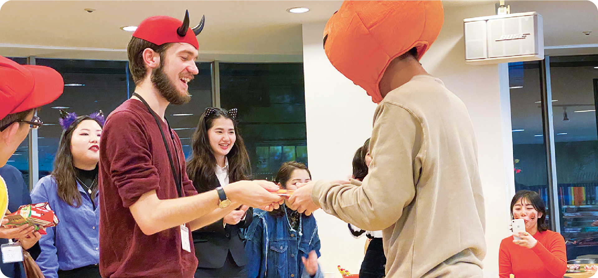日常的に英語を話せる場を
キャンパス内に。
TA(Technos Assistant)とは、学院が提携している海外姉妹校の卒業生をティーチングアシスタントとして招き、学内に常駐することでキャンパス内に英語でコミュニケーションする場として学生に活用してもらいます。海外の伝統行事を体験するなど、楽しみながら英語に親しむことができます。
海外姉妹校・提携大学一覧
アーネスト・ライダー
学長
オックスフォード大学 ペンブローク・カレッジ
Pembroke College, The University of Oxford
（オックスフォード、英国）
オックスフォード大学ベンブローク・カレッジは、テクノスカレッジとの絆を誇りに思っています。ペンブローク・カレッジは1624年に創立され、近年は、世界中から優秀な学生をキャンパスに招き、より充実した教育を受けられる環境を提供しています。私たちの学生は、素晴らしい教育を受けられるばかりでなく、テクノスカレッジとの結びつきにより、国際的視野を広げる機会を与えられています。
ジョイス・P・
ジェーコブセン学長
ホバート・アンド・ウィリアム・スミス大学
Hobart and William Smith Colleges
（ニューヨーク州、米国）
テクノスカレッジとホバート・アンド・ウィリアム・スミス大学の、長く豊かな交流の歴史は、約25年以上にわたります。国境を越えた友情の重要性と国際理解を深めたいという、私たちに共通の理念は、私たちの学生をテクノス・インターナショナルウィークに参加させることでさらに深まりました。そして将来的に、テクノスカレッジの学生が私たちの大学を留学先に選ぶことを願っています。
マシュー・A・スコギン学長
ホープ大学
Hope College
（ミシガン州、米国）
ホープ大学は国際社会で先頭に立ち、奉仕する学生の育成を目指しています。そして、その手段として、テクノスカレッジのような優良な学校と提携を結んでいます。ホープ大学の学生はテクノスカレッジへの研修を通して多くの日本文化を学び、また、テクノスカレッジの学生もホープ大学を訪れて貴重な経験をします。数々の交流プログラムを通して築かれた姉妹校関係は、両校の学生に、今日の世界で生きるために重要な国際感覚を身につけさせると信じています。
ダニエル・C・ドビンズ学長
マッケンドリー大学
McKendree University
（イリノイ州、米国）
今日こうして、マッケンドリー大学を紹介し、皆さんが私たちの学校で勉強するようお誘いできることを嬉しく思います。マッケンドリー大学とテクノスカレッジは、1992年から姉妹校関係にあります。その関係から、マッケンドリー大学の学生と教授が日本を訪問し、日本の文化と生活に関する理解を深めてきました。こうした経験は、私たちの学生が、国際社会において果たすべき役割を理解するのに役立っています。
アリソン・R・バイアリー学長
カールトン大学
Carleton College
（ミネソタ州、米国）
テクノスカレッジの献身的な活動は、たくさんの学生たちの、異文化理解に多大なる貢献をもたらしました。今後はテクノスカレッジが得意とするニューメディアテクノロジーを使い、二つのキャンパス間のコミュニケーションをさらに密にするという、新しい形での交流も夢描いています。年々インターナショナルウィークの参加経験者が増えていくことに大変感謝し、そして相互努力と協力で、現在の世代と将来の世代間の友情がさらに進化したものになるように願っています。
S・ジョージア・
ニュージェント学長
イリノイ・ウェズリアン大学
Illinois Wesleyan University
（イリノイ州、米国）
イリノイ・ウェズリアン大学はテクノスカレッジとの長年の姉妹校関係をとても大切にしています。私たちはテクノスカレッジの国際理解・国際協力を推進するビジョン、そしてその献身的な努力を尊重しています。当校の学生や教員も、テクノスカレッジとのさまざまな交換プログラムを通して、国際感覚や理解を一層深めることができています。テクノスカレッジと姉妹校関係であることを大変誇りに思っています。
A・クレイトン・
スペンサー学長
ベイツ大学
Bates College
（メイン州、米国）
ベイツ大学から、ご挨拶申し上げます。私たちは、テクノスカレッジの姉妹校としての豊かな伝統を継続することを大変光栄に思っています。私たちの学校は、テクノスカレッジとの国際交流でさまざまな恩恵を受けており、今後も共通の目的を持ち、両校の更なる発展と輝かしい未来を心より願っています。
ジョアンヌ・
バーガースウィーニー
学長
トリニティー大学
Trinity College
（コネチカット州、米国）
トリニティー大学は田中育英会とテクノスカレッジとの関係をとても大切にしています。両校は「学生や教員の文化交流を通して、アジアと米国全体においての国際理解を促進する」という共通目標を掲げています。文化や思考の多様性について熱心に研究してきた学者かつ指導者として、そのビジョンある行動・リーダーシップには個人的にとても感謝しています。トリニティー大学がその姉妹校の中の一つであることは大変光栄に思います。
マコーマック学長
オークランド工科大学
Auckland University of Technology
（オークランド、ニュージーランド）
オークランド工科大学は、教育方法や学習方法、またリサーチにおいて、革新的なアプローチを実践している近代的でユニークな大学です。常に外に対して目を向け、今日の世界を形作る、社会的、経済的、そして技術的な変化に対応しています。私たちは、田中育英会とのつながりを大切にしており、テクノスカレッジとの姉妹校関係を誇りに思っています。

ミラグロス・ペーニャ
学長
ニューヨーク州立大学 パーチェス・カレッジ
Purchase College
（ニューヨーク州、米国）
ニューヨーク州立大学パーチェス・カレッジは、アジアと米国間の異文化学習を推進するため、テクノスカレッジと姉妹校であることに感謝しています。我々の体験型交流プログラムを通して、学生と教員があらゆる研究分野において人生の礎を築くことができると確信しています。私たちは、テクノスカレッジと共に未来の若者の国際理解を促進していきたく思っています。
関連するその他の記事
学びTopics
一覧へ現在、Topicsはありません。